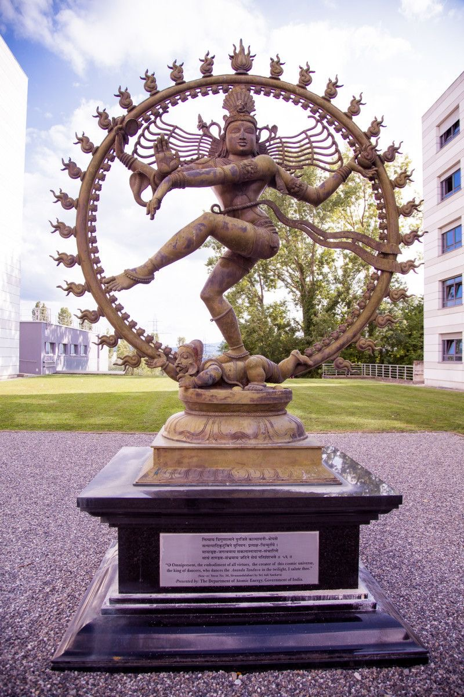
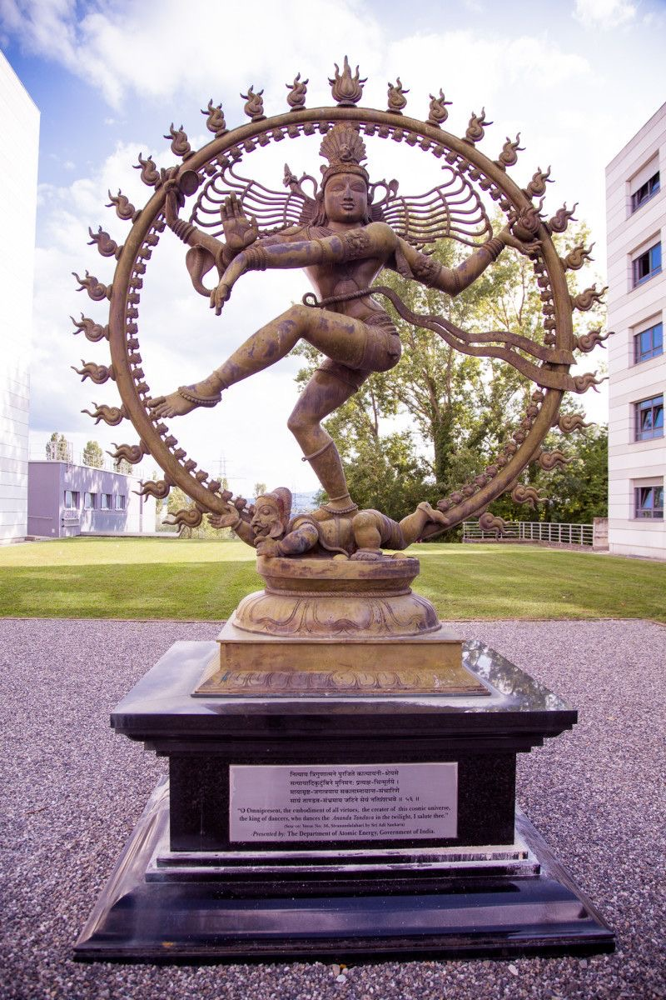
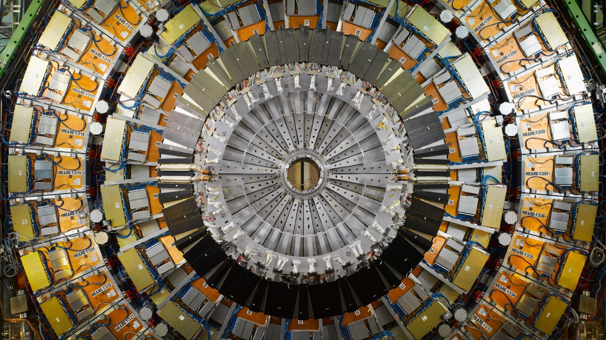
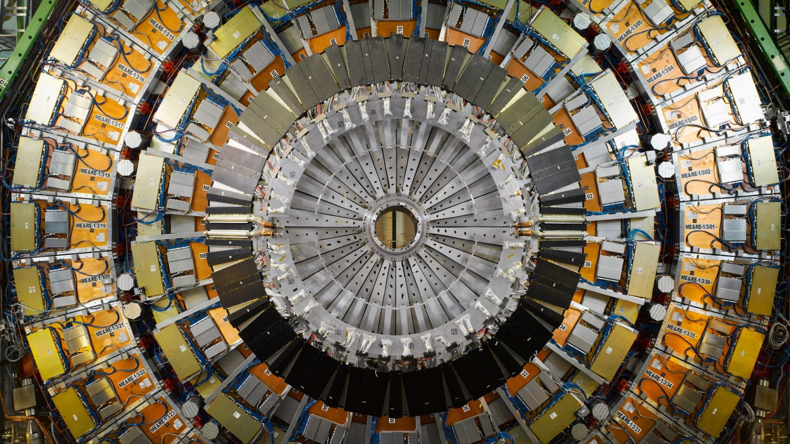

CERNAs with NASA, CERN’s scientific mission appears to extend beyond the realms of pure technology and research. The European Organization for Nuclear Research (CERN), renowned for its Large Hadron Collider (LHC) and groundbreaking discoveries in particle physics, has long been a focal point for both scientific curiosity and deeper esoteric speculation. Much like NASA’s space missions, CERN’s research in the subatomic world carries with it echoes of ancient traditions and occult symbolism, suggesting that its pursuit of knowledge may also be a pursuit of hidden spiritual truths. Symbolism of Destruction and Creation: One of the most striking occult connections at CERN is its prominently displayed statue of the Hindu deity Shiva. In Hindu tradition, Shiva is known as the "Destroyer" or "Transformer," a god who governs both the creation and destruction of worlds. The placement of this statue at CERN—a leading center for particle collision experiments—implies a symbolic connection between the act of destruction in the subatomic world and the cycle of cosmic creation and destruction. This cycle, central to many esoteric beliefs, reflects humanity's quest to understand the very fabric of existence. The Shiva statue is not just an aesthetic installation; it was a gift from the Indian government, reflecting the deep symbolic importance of Shiva in both the spiritual and scientific domains. In CERN’s context, the image of Shiva dancing within a ring of fire—performing the cosmic dance of Tandava, which symbolizes the eternal cycles of creation and destruction—echoes the activities within the Large Hadron Collider. The LHC smashes particles together at near-light speeds to explore the conditions of the early universe, essentially recreating the fundamental processes of creation. This collision, followed by disintegration, aligns with the spiritual idea of creation emerging from chaos. The alignment between Shiva’s dance and CERN’s particle experiments points to a deeper philosophical connection, one that resonates with the ancient Hermetic belief that "as above, so below"—that the actions within the smallest particles mirror the forces shaping the universe. Large Hadron Collider (LHC)The Large Hadron Collider (LHC) at CERN is the largest machine ever built by humanity, and it holds the record for the highest energy particle collisions ever achieved. Many have likened CERN’s ambitious scientific pursuit to the story of the Tower of Babel in Genesis 11:4, where humanity sought to reach the heavens through their combined efforts and knowledge. The LHC, in its quest to uncover the “God particle” (the Higgs boson) and potentially unlock the secrets of the universe, reflects a modern version of this ambition. According to some interpretations, the Tower of Babel was not just about height, but about humanity’s desire to transcend its earthly limitations and acquire divine knowledge. In a similar fashion, CERN's experiments have been compared to humanity’s attempt to unveil the secrets of creation itself—essentially reaching beyond what is naturally intended. The LHC has even been speculated to potentially open portals to other dimensions, a concept that invokes both awe and concern, as such actions are reminiscent of ancient esoteric rituals where gateways to other realms were deliberately sought. Visually, the circular structure of the LHC resembles a mandala, an intricate geometric design used in Hindu and Buddhist traditions to represent the universe. Mandalas are more than just symbols—they are spiritual tools used in meditation and rituals to symbolize cosmic order and spiritual enlightenment. In their traditional use, mandalas are not merely static patterns but serve as doorways to higher dimensions of consciousness, much like the theoretical portals that CERN’s particle collisions might create. The LHC’s design, with its vast circular rings, bears an uncanny resemblance to these sacred geometrical structures, suggesting that its purpose might extend beyond science into the realm of spiritual exploration.  

Mandalas serve as a powerful spiritual tool, connecting practitioners to various deities and divine energies. In Hinduism, they are linked to Vishnu and Shiva, reflecting cosmic order and transformation. Shiva, who also stands as a symbol at CERN, represents the cycle of destruction and rebirth, making the visual and symbolic connection between CERN’s experiments and ancient spiritual beliefs even more profound. In Buddhism, mandalas are associated with the Buddha and Avalokiteshvara, symbolizing enlightenment and compassion. In Tantric practices, they connect to Kali and Dakinis, embodying transformation and spiritual liberation. Could it be that the LHC, much like the mandalas, is also a symbol of humanity’s desire to not only understand but manipulate the forces of creation and destruction? 

The LHC’s resemblance to a mandala strengthens the argument that CERN's work, whether consciously or not, engages with deeper spiritual forces. Just as the mandala represents a microcosm of the universe, reflecting the macrocosmic order, the LHC seeks to unravel the universe’s most fundamental building blocks. The symmetry in these designs, both in form and purpose, invites a reflection on whether CERN’s research is guided by an ancient, esoteric understanding of the universe, blending the spiritual and the scientific in a pursuit that mirrors both creation and enlightenment. Higgs Boson: The “God Particle”The discovery of the Higgs boson in 2012, often sensationalized as the “God particle,” is another instance where CERN’s scientific endeavors cross into the realm of the esoteric. While the term "God particle" was coined to signify the importance of this discovery in understanding the structure of matter, its spiritual implications run deeper. In many esoteric traditions, matter is considered a manifestation of divine energy. The search for the Higgs boson, a particle believed to give mass to other particles, is symbolically akin to seeking the essence of creation itself. In this context, the pursuit of the Higgs boson becomes more than just a scientific endeavor—it reflects humanity's attempt to understand the fundamental building blocks of reality, the substance from which the universe is shaped. This mirrors the ancient quest of alchemists, who sought the "philosopher’s stone," a substance capable of transforming base matter into gold, but more importantly, unlocking the secrets of immortality and divine knowledge. The discovery of the Higgs boson, therefore, could be interpreted as modern science’s own philosopher’s stone—a key to the mysteries of the cosmos. The 2016 “Mock Sacrifice”In 2016, a video surfaced showing what appeared to be a mock human sacrifice at CERN, performed in front of the Shiva statue. While CERN officials claimed the video was a prank carried out by staff, the imagery it presented struck a chord with those already inclined to see deeper occult connections in CERN’s work. The mock ritual, combined with the symbolism of Shiva’s cosmic dance, further fueled speculation that CERN’s research might be tapping into or even performing rituals meant to invoke hidden forces. The ritual sacrifice, whether staged or real, eerily mirrors ancient rites where sacrifices were made to appease gods or spirits. These acts were often seen as ways to gain favor or knowledge from higher powers. While the CERN event was officially dismissed as a prank, the fact that such imagery was used at all suggests that the symbolic and esoteric dimensions of CERN’s activities are not far from the surface. Much like NASA’s logo, which has been compared to the serpent’s tongue, CERN’s logo has also sparked controversy for its seemingly hidden symbolism. The most striking interpretation is that the intertwined loops in CERN’s logo resemble the number 666, often referred to as the "number of the beast" in Christian eschatology. While CERN’s official explanation is that the logo represents the rings of the Large Hadron Collider and particle collisions, the arrangement of the shapes has led some to speculate about deeper, more occult meanings. The number 666 has long been associated with deception, rebellion, and the influence of dark forces in biblical texts, particularly in the Book of Revelation. Given that CERN’s work delves into the unknown, seeking to unlock the mysteries of the universe, some see the logo as a subtle nod to the agency’s engagement with forbidden knowledge or cosmic forces beyond our understanding. Whether intentional or coincidental, the resemblance of CERN’s logo to 666 adds another layer of intrigue to the organization’s activities, hinting at connections between their scientific explorations and the esoteric or occult. Portals and Other Dimensions:CERN’s research has long been associated with the idea of opening gateways or portals to other dimensions. Theoretical physicists working at CERN have proposed that the extreme conditions created during particle collisions in the LHC could lead to the discovery of extra dimensions. This possibility has led to widespread speculation about whether CERN might inadvertently—or deliberately—create portals to other realms of existence. In esoteric and occult traditions, opening portals to other dimensions or contacting spiritual entities is a central theme. Rituals designed to communicate with otherworldly beings or enter higher planes of consciousness have been performed for centuries by secret societies and esoteric groups. The fact that CERN’s scientific research seems to touch upon similar concepts—albeit from a purely theoretical standpoint—raises intriguing questions about the overlap between cutting-edge physics and ancient occult practices. Could CERN’s experiments be modern attempts to do what ancient magicians and mystics tried to achieve—contact with other realms or entities? Are the “other dimensions” that physicists seek to uncover merely a scientific reframing of the same spiritual realms described in ancient texts? Sacred Geometry and Numerology at CERNJust as NASA’s missions and facilities often feature sacred geometric alignments and numerological significance, CERN too has its share of symbolic numbers and patterns. One of the key sites associated with CERN’s work is the town of Saint-Genis-Pouilly, located near the border of France and Switzerland. In Roman times, this area was known as Apolliacum, a site dedicated to the god Apollo. This connection evokes the themes of ancient sun worship and celestial divinity, similar to NASA’s Apollo Program. Furthermore, CERN’s Large Hadron Collider is built in a circular shape, which many esoteric traditions associate with the concept of the "ouroboros"—the ancient symbol of a serpent eating its own tail, representing the cycle of creation, destruction, and rebirth. The circular design of the LHC mirrors this ancient symbol of infinity and continuity, suggesting that CERN’s work could be seen as part of an eternal process of creation and destruction, much like the cosmic cycles represented in alchemical and Hermetic traditions. ReflectionCERN’s quest to unlock the mysteries of the universe has captivated the world with its groundbreaking discoveries in particle physics. However, beneath the surface of its scientific achievements, there is a layer of symbolism and esoteric significance that cannot be ignored. From the imposing statue of Shiva, the Hindu god of destruction and rebirth, to the mandala-like structure of the Large Hadron Collider, CERN’s work resonates with themes that transcend the boundaries of science and enter the realm of the spiritual. The statue of Shiva at CERN headquarters is more than a nod to cultural diversity; it serves as a potent symbol of the destructive and creative forces at play in both the physical and metaphysical realms. Shiva’s cosmic dance mirrors the process CERN scientists strive to understand—the birth of the universe from the chaos of subatomic collisions. The Large Hadron Collider itself, with its circular design, evokes the ancient mandalas used in spiritual rituals to represent the cosmos. Just as mandalas serve as portals to higher consciousness, the LHC can be seen as humanity’s modern tool for exploring the deepest secrets of existence—or perhaps crossing the threshold into unknown dimensions. This convergence of ancient symbolism with modern scientific endeavor raises questions about the true nature of CERN’s work. Is it simply the pursuit of knowledge, or does it tap into forces long revered and feared by esoteric traditions? While the scientists and staff at CERN are largely driven by a genuine desire to expand humanity’s understanding of the universe, it is possible that some of the knowledge they uncover may come from sources beyond their awareness. Just as the Pythagoreans hallucinated equations in a cave under the influence of smoke, writing them down for later study, there may be unseen rituals conducted behind the scenes. These rituals could involve invoking spiritual entities, whose revelations are later passed on to scientists in the form of ideas or equations to decipher, leading to new discoveries. Of course, this idea is easily dismissed as conspiracy theory. But even if such practices are happening, the world, by and large, does not seem troubled by them. From a Hindu perspective, the gods are being honored, and in Buddhism, meditation and enlightenment are central, so such revelations may not be seen as problematic. However, the Bible offers a different perspective. Scripture warns against the pursuit of knowledge through such entities, cautioning that they do not have humanity’s best interests at heart. While these beings might offer insights into the workings of the universe, the price for that knowledge is often steep—ranging from moral corruption to, in the most extreme cases, human sacrifice. In this light, CERN’s work might be seen as more than just scientific discovery. It could also be viewed as a form of spiritual engagement, where entities once considered the enemies of mankind are honored or reached out to under the guise of scientific progress. The fact that these activities are highly funded and cloaked in logic and reason makes them all the more accepted by society, masking the spiritual dimensions of their work. These considerations are crucial when reflecting on the state of our world today. Many blame God for the evil they see in modern times, but if humanity, through its idols and celebrities, intentionally reaches out to these beings for knowledge, fame, money, and inspiration, shouldn’t we expect suffering and destruction to follow? God’s role is to address these issues at the appointed time, not interfere with mankind’s free will. If we continue to invoke spirits in the name of personal gain, as warned in Scripture, then the consequences we face are of our own making—a lesson we may need to learn the hard way. Ultimately, CERN stands at the intersection of the material and the spiritual, much like the ancient civilizations that sought to understand the universe through both observation and reverence for the divine. As we continue to explore the fundamental forces that shape reality, it is important to remain mindful of the deeper, more mysterious aspects of this quest. Whether by coincidence or design, CERN’s work carries echoes of ancient wisdom and occult influence, reminding us that science and spirituality, once intertwined, may not be as separate as modern thought would have us believe. ConclusionIn conclusion, CERN’s incredible scientific achievements seem to suggest that there may be something deeper happening beyond just research and discovery. The passion of the scientists is undeniable, with many genuinely driven to expand humanity’s understanding of the universe. However, the symbolism—such as the statue of Shiva and the mandala-like design of the Large Hadron Collider—hints at a potential intersection of science with spiritual or esoteric elements. This raises the question of whether the pursuit of knowledge here is crossing into areas that blend science with ancient, deeper mysteries that we may not fully recognize. From my perspective, there's a real concern here, especially when I look at it through a Biblical lens. Scripture warns us about the dangers of seeking knowledge from entities that don’t have humanity’s best interest at heart. I believe there’s a price to pay for that kind of knowledge, whether it's moral corruption or something worse. And yet, so much of this is brushed aside as conspiracy or just not taken seriously, even by religious institutions. I get that most people, and probably most scientists at CERN, aren’t involved in any of these deeper rituals. But when you consider the possibility that some of these discoveries might be influenced by hidden forces or spiritual entities, it raises important questions. Are we really just chasing knowledge, or is there something else at play here—something that mirrors ancient practices of reaching out to these beings for insight? In the end, I think we have to be cautious. The line between science and the occult isn’t as clear as we like to believe. And while I’m amazed by what CERN has accomplished, I can’t shake the feeling that this pursuit of knowledge might be leading us down a dangerous path. We have to remember that not all knowledge is good, and some may come at a cost we’re not prepared to pay. That’s a lesson humanity may have to learn the hard way if we keep ignoring the warnings that have been there all along. |